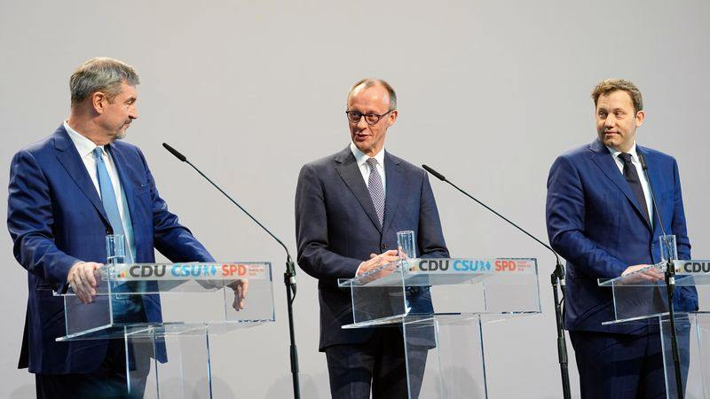

世界苦茶04月10日新闻 | 28条 | 美国放宽全球对等关税仅保留中国加税

美国放宽全球对等关税仅保留中国加税 | 中国3月CPI和PPI继续下滑 | 中美关税战继续升级 | 台湾要求中配补缴丧失原籍证明 | 中国公布美国旅行警告 | 德国联合政府公布联合执政协议
透明茶室
苦茶数据
美元兑人民币：7.35（昨日7.38，前日7.34）
美元兑日元：146.93（昨日146.64，前日147.51）
上证指数：3223（昨日3145，前日3113）
标普500指数：5456（昨日4982，前日5062）
比特币：82158（昨日75606，前日80566）
布伦特原油：64.96（昨日60.87，前日64.74）
中国新闻
• 中国文旅部提醒游客谨慎赴美 ：中美贸易战本周愈演愈烈，中国文化和旅游部星期三晚发风险提示，呼吁中国游客谨慎赴美。中国文旅部官网发布风险提示，指近期由于中美经贸关系恶化以及美国内安全形势，文旅部提示中国游客充分评估赴美旅游风险，谨慎前往。美国星期三对中国商品加征104％的关税，中国同日再宣布反制措施，星期四12时零1分起对所有美国进口商品再加50％关税，加征关税税率提高到84％。
• 修订《婚姻登记条例》公布自5月10日起施行，离婚冷静期保持： 淡化离婚冷静期概念，改用“在法律规定期限内”表述，即仍是提交申请后30–60天内领离婚证。
• 瑞典男子涉为中国监视维族人 ：瑞典一名检察官星期三指控一名男子为中国监视流亡的维吾尔族人。法新社报道，在斯德哥尔摩索尔纳举行的法庭听证会上，检察官要求以严重间谍罪拘留该嫌疑人。检察官永奎斯特说：“这名男子涉嫌为中国情报部门非法收集维吾尔族人士的信息和情报。”
• 李强召开经济形势座谈会 ：美国星期三对中国商品加征104％的关税，中国总理李强同日主持召开经济形势座谈会，要求靠前发力推动既定政策尽快落地见效，根据形势需要及时推出新的增量政策，以有力有效的政策应对外部环境的不确定性。据新华社报道，李强星期三下午主持召开经济形势专家和企业家座谈会，听取对当前经济形势和下一步经济工作的意见建议。座谈会上，张斌、李迅雷、沈建光、万敏、郑津、彭志辉、王钻等先后发言。李强指出，今年的形势比较特殊，中国沉着冷静应对各种风险挑战，一季度经济运行延续回升向好态势。同时要清醒看到，外部冲击对中国经济平稳运行造成一定压力。
• 教育部部署高校征兵宣传 ：中国教育部印发通知，部署各地各高校加大征兵宣传进校园工作力度，进一步激发高校学生参军报国热情，鼓励引导高校学生特别是应届毕业生积极参军入伍。据中国教育部官网星期三消息，教育部办公厅在2月24日发出的一份通知中说，高校学生是建设世界一流军队的重要人才资源。要把做好高校学生征兵宣传，作为服务国防和军队现代化建设的基础工程，落实立德树人根本任务的重要途径，拓宽青年学生成长成才通道的有效举措，引导青年学子自觉把个人理想融入强国强军伟业。
• 美国警告中方招募美政府雇员 ：美国当局星期二警告称，中国情报机构会使用欺骗手段，招募美国现任和前任政府雇员。路透社报道，美国国家反情报与安全中心在一份公告中说：“外国情报机构，尤其是中国的情报机构，正在冒充咨询公司、企业猎头、智库和其他实体，在社交网站上招募美国现任和前任政府雇员。”中心说，针对具有美国政府背景、正在找新工作的人，中国会运用更复杂的欺骗性手段。他们警告现任和前任联邦雇员警惕此类手段。
• 何卫东未出席中央周边工作会议： 中国星期二起罕见召开中央周边工作会议，中共政治局常委全数出席，国家副主席韩正也出席会议。官媒新华社星期三下午报道，“党和国家有关领导同志，有关方面负责同志参加会议”。香港《星岛日报》星期四报道，会议规格相当高，中央政治局委员几乎都出现，但久未露面的何卫东缺席。报道称，央视《新闻联播》节目画面显示，政治局委员坐在台下第一排，包括军委副主席张又侠，但没有何卫东。何卫东今年3月11日出席全国人大会议闭幕会之后，没有再公开露面。
亚太印太新闻
• 泰国外长呼吁加大缅甸救灾援助 ：泰国外交部长玛里星期二说，缅甸地震灾区仍急需医疗援助、野战医院和避难所，并强调协调区域救援行动和长期支持对震后救灾至关重要。路透社报道，3月28日发生的缅甸大地震已造成3645人死亡，5017人受伤，另有148人失踪。近4万9000栋房屋和2100多座政府建筑被毁。玛里和马来西亚外长莫哈末哈山上星期六在内比都会见了缅甸官员，并亲眼目睹灾情的严重程度。
• 台湾陆配接通知需补丧失原籍证明 ：多名网红陆配因涉武统言论被遣返后，在台湾的陆配群体陆续接获移民署通知书，要求在三个月内缴交丧失原籍证明文件，否则将遭撤销在台定居、户籍。综合台湾《中国时报》《自由时报》星期三报道，有陆配称近来接获移民署通知，要求缴附“经海基会验证之丧失原籍公证书”等文件。逾期未缴，移民署将撤销定居证，并通知户政事务所撤销户籍。有陆配抱怨，在台多年早与老家没有联系，无法取得证明文书，质疑移民署的通知书引起广大陆配恐慌。一名领有台湾身分证超过20年的陆配表示，她在中国大陆实施二代身份证制度前即注销户籍，现行系统查无资料，难取得证明，认为政府是在“秋后算帐”。
• 金与正批美日韩谈朝无核化 ：金与正4月8日谈话，指责美日韩三国外长在北约外长会上诋毁朝鲜主权，称朝鲜无核化是“不可能实现的妄想”。批评美国的朝鲜无核化目标是“极其愚蠢的期待”，实践上既不可行，概念上更不切实际，强调“有谁在我们面前敢把弃核挂在嘴上，还企图给其披上这样那样的华丽外衣来复辟早已死去的‘无核化’概念，那么这本身就是否定朝鲜民主主义人民共和国的主权，强迫我们抛弃宪法、放弃制度的最敌对行为。”
科技新闻
• 特朗普放宽对华AI芯片出口限制 ：据美国全国公共广播电台报导，Nvidia首席执行官黄仁勳上周出席海湖庄园晚宴后，特朗普政府改变了限制向中国出口Nvidia H20人工智能芯片的计划。 （翻评：H20是现在能卖给中国的最高级的芯片。）
财经新闻
• 中国居民消费价格CPI连续两个月下滑，工业生产品价格PPI继续下滑： 中国国家统计局官网星期四公布，3月份全国居民消费价格同比下降0.1%，降幅小于2月的0.7%，但不及路透社早前调查后得出的持平预期。环比方面，全国居民消费价格跌幅则从2月的0.2%扩大至3月的0.4%，高于路透社展开调查后预测的0.3%跌幅。另一方面，中国工业生产者出厂价格同比从2月的下滑2.2%，扩大至3月的下滑2.5%；环比跌幅则从2月的0.1%，扩大至3月的0.4%。
• 中国对美12家企业实施出口管制 ：美国星期三对中国商品加征104％的关税，中国同日再宣布反制措施，将12家美企列入出口管制名单 另六家列为不可靠实体，自星期四12时零1分起正式实施。中国商务部星期三发布两则公告，第一则公告将美国光子公司等12家美国实体列入出口管制管控名单，以维护国家安全和利益，履行防扩散等国际义务。12家被列入出口管制管控名单的美国实体，包括美国光子公司、诺沃特公司、埃科达因公司、马文工程公司、埃克索维拉公司、特励达·布朗工程公司、BRINC无人机公司、赛尼克斯公司、火风暴实验室公司、奎托斯无人机系统公司、多莫战术通信公司，以及英斯图公司。
• 广州回应希音供应链转移传闻 ：中国在线快时尚零售商希音据报寻求将供应链向中国境外转移，在中国政府反对后放弃。广州市商务局回应说，希音持续加码投资以广州为核心的中国国内供应链，“谣言不攻自破”。据《南方都市报》星期三报道，针对“希音供应链转移”的消息，广州市商务局回应称，希音作为从广州成长起来的全球化企业，持续在以广州为核心的中国国内供应链加码布局和投资，今年一季度在广州的出口额继续保持增长，“无疑是让供应链转移的谣言不攻自破”。报道称，据不完全统计，希音通过带动中国贸易出口、生产制造、仓储物流、交通运输等一大批行业，推动了上下游百万级人员的就业发展。广东省已成为希音平台产业带出海示范省，2024年在希音平台实现了广东21个地级市产业带的全部覆盖。
• 台湾称已列入美方关税谈判名单 ：因应美国对等关税冲击，台湾外长林佳龙星期三说，台湾已列入美国未来要谈判的名单中，双方正在交换资讯。综合《联合报》、TVBS新闻网、三立新闻网等报道，林佳龙星期三被问及美国对台关税政策的因应时说，台湾已有列入美国未来要谈判的名单中。他说，双方正交换信息，台湾陆续提供美国所需的进一步资料，期望很快能展开实质谈判。林佳龙说，美国关切台湾的事项不只有关税谈判，还包含对美国的投资与采购，以及美国贸易代表署列出的非关税障碍问题。
• 传中国要求国有银行减美元购入 ：路透社星期三引述知情人士说，中国央行不会允许人民币大幅贬值，并已要求主要国有银行减少美元购买量。中国政府出台这一指令之际，正值美国对中国出口产品征收巨额关税，人民币面临巨大的贬值压力。路透社引述三名知情人士称，中国央行本周向国有银行发出了窗口指导，这是该行管理市场政策的非正式方式，要求它们停止从自营账户购买美元。
• 美国将提高中国小包裹关税 ：美国媒体报道，美国将从5月2日起把中国小额包裹的关税提高三倍至90%。据美国新闻网站Axios报道，特朗普上周签署了一项行政命令，从5月2日起终止针对中国货物进口的漏洞。白宫说，从中国通过国际邮政系统寄往美国、价值低于800美元的小额包裹，将被征收相应关税。报道称，通过国际邮政网络寄送的价值低于800美元的小额包裹，最初须缴纳相当于其价值30%或每件25美元的关税，并在今年6月1日后增加到每件50美元。
• 美债遭抛售，长期收益率飙升 ：美债本周首场拍卖需求疲软后，星期三再次遭遇剧烈抛售。其中，30年期收益率一度升至4.76%，比上周低点上升超过50个基点，显示美债作为避险资产的地位被动摇。与此同时，德国和日本国债的吸引力正在增强。据彭博社报道，美国财政部星期二推出580亿美元的三年期国债，但市场参与意愿低迷，一级交易商被动分配到20.7%的债券，为一年多以来的最高比率。市场预期接下来10年期与30年期债券的拍卖结果可能同样承压。这次抛售最为剧烈的集中在10年期到30年期的中长期债券，这些债券的价格在收益率上升时会面临更大损失。10年期国债收益率上涨了超过10个基点，而30年期国债收益率升至4.76%。
• 欧盟同意对美部分商品加征关税 ：欧盟成员国4月9日以26票赞成、1票反对（匈牙利）的结果同意于4月15日起分阶段对美国一系列商品征收高达25%的关税，以反制美国钢铝关税。但欧盟重申，仍然倾向于通过谈判达成协议来解决贸易问题。
• 亚洲买家减少美国农产品采购 ：由于美国计划对与中国有关的船只征收巨额港口费，并对主要区域贸易伙伴征收进口关税，这引发不确定性并抑制对美国产品的需求，亚洲买家正在减少对美国农产品的购买量。路透社星期三报道这个消息时指出，中国是美国农产品的最大进口国，日本、韩国和泰国等其他亚洲国家也购买了大量美国小麦、玉米和豆粕。美国总统特朗普计划重振美国造船业，对与中国相关的船只征收高达150万美元的港口费，这迫使出口商寻找非中国船只，进而推高了运费成本，削弱对美国农产品的需求。
• 萨默斯警告美或因关税陷衰退 ：美国哈佛大学经济学教授、美国前财政部长萨默斯认为，由于特朗普政府正在实施的关税措施，美国目前可能正朝着经济衰退的方向发展，可能导致约200万美国人失业，每个家庭将面临至少5000美元的收入损失。萨默斯星期二接受彭博社访问时说，特朗普的关税计划将在未来几周面临“非常重要的选择”。这些关税计划的规模甚至超过1930年的关税，后者“加剧了大萧条”。萨默斯认为，明智的做法是“撤回已经宣布的政策”。他还说，美国此次面临的经济衰退挑战，是由特朗普及其政府的言行引起。如果美国政府放弃其“政策错误”，经济将恢复正常。
• 特朗普暂时降低了对大多数国家的关税 ：美国总统特朗普周三表示，他将暂时降低刚刚对数十个国家征收的高额关税，这一惊人逆转令美国股市一飞冲天。特朗普表示，他将暂停对其他国家的目标关税，为期三个月，以便美国官员有时间与寻求降低关税的国家进行谈判。但他将把对中国进口商品征收的关税从午夜生效的104%提高到125%。此前，中国将对美关税提高至84%。白宫表示，特朗普撤销针对具体国家的关税并不是绝对的，对几乎所有美国进口商品征收10%的全面关税将继续有效。这一声明似乎也不会影响已经实施的汽车、钢铁和铝关税。
俄乌战争
• 美俄代表团将在土耳其举行会谈 ：美国与俄罗斯代表团将于星期四在土耳其伊斯坦布尔就双边关系举行第二轮会谈，争取在恢复两国使馆正常运作方面取得进展。新华社报道，美国国务院发言人布鲁斯在星期二的新闻发布会上说，此次会谈不会涉及政治或安全议题，乌克兰问题也不在议程内，会谈只聚焦于美俄使馆的运作，而非全面实现双边关系正常化。他同时指出，俄乌实现和平后，美俄双边关系才有可能全面正常化。俄罗斯与美国代表团2月曾在美国驻伊斯坦布尔领事官邸进行超过六个半小时的闭门会谈。美国媒体引述美国国务院人士的话报道称，双方在会谈中讨论使馆运作问题，涉及人员配置、签证等。
• 泽连斯基称掌握155名为俄作战中国人资料 ：泽连斯基4月9日声称，已经收集了155名为俄罗斯作战的中国公民的姓氏和护照数据，并认为还有更多人。泽连斯基表示，中国官员知道俄罗斯招募中国雇佣兵的行动，但没有证据表明中国当局下达了任何命令。泽连斯基愿意用此前俘虏的为俄军作战的中国公民来交换被俄罗斯俘虏的乌克兰士兵。乌克兰军方称，其中一名被俘的中国公民支付了30万卢布，通过中间人获得了加入俄罗斯武装部队的机会。动机是渴望成为军人并获得俄罗斯公民身份。
其他新闻
• 德国联盟党与社民党4月9日公布联合执政协议： 协议涵盖了削减开支、提高最低工资、税收减免、收紧难民政策、成立国家安全委员会简化国防决策等联盟党总理候选人弗里德里希·默茨表示，协议向德国公民和欧盟发出明确信号，德国的下一届政府将有能力采取行动协议为默茨领导的新政府铺平了道路，但仍需得到社民党以及组成联盟党的基民盟和基社盟的批准。
• 巴拿马调查长和港口合同违规 ：巴拿马总检察长戈麦斯星期二说，巴拿马已对授予香港长江和记集团运营两个港口的合同展开调查。同日到访巴拿马的美国国防部长赫格塞斯说，美国将把巴拿马运河从中国的影响中夺回来。巴拿马审计署星期一公布审计结果称，授予长和集团运营港口的特许权存在违规行为，将起诉与长和续约的官员。审计长弗洛雷斯批评，长和旗下子公司巴拿马港口公司在头25年的合约期内，至少应付给巴拿马共和国13亿美元，但该公司利用税收优惠省掉了8.5亿。据路透社报道，戈麦斯在星期二发给弗洛雷斯的信中说：“检察官办公室正在对涉嫌违反公共管理罪和其他危害国家罪的指控，依职权进行调查。”
• 多米尼加夜总会坍塌致113死 ：多米尼加夜总会屋顶坍塌事故已造成至少113人死亡、255人受伤。救援人员仍在寻找潜在幸存者。许多死者身份尚未确定，屋顶坍塌原因仍不清楚。
• 特朗普威胁动武遏制伊朗核计划 ：特朗普再次威胁称，如果伊朗不同意结束其核计划，他将动用军事力量，并称以色列将在任何军事行动中发挥关键作用。特朗普表示，不能允许伊朗拥有核武器，如果伊朗拒绝停止发展核武器的努力，他可能会采取军事行动。